📘【论文阅读】解释和改进安全应用中基于深度学习的异常检测
💡本篇文章是根据我在 21 年底的 MESA 讨论班整理而成，文中图片皆由本人制作的 PPT 导出。
一、背景介绍
论文简介
本次分享论文的题目是《解释和提升基于深度学习的网络安全异常检测应用》。
作者信息
论文由清华大学的团队发表在 2021 年的 CCS 上，提出了一个被命名为 DeepAID 的通用框架，旨在解释安全领域中基于深度学习的异常检测系统，以及基于解释来提高这些系统的实用性。
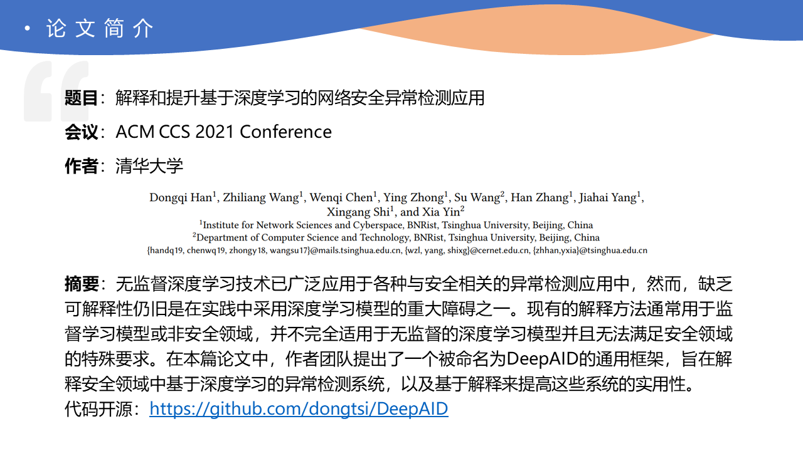
本文一作是清华大学博士生韩东歧，从事异常检测、流量分析和态势感知等研究领域，右侧是他的导师王之梁。该研究团队也在 Datacon 2020 年比赛中获得了加密恶意流量检测方向的一等奖。
背景知识
随着网络空间环境日益复杂，不同的设备、系统、软件会产生海量异构数据和信息，对这些数据进行分析、发现和识别异常对于保障系统的可靠性和安全性是至关重要的。
异常检测作为一种长期存在的主动防御安全方案，在网络安全场景中有着广泛的应用、如攻击 / 入侵检测、系统运维检测、异常行为分析等等。
近年来，基于深度学习的异常检测算法被提出并展现了良好的性能，相较于传统的异常检测算法，其主要优势是可以从更多的数据中更好地学习非线性的复杂特征，并且能处理高维和有关联依赖的复杂数据类型，满足安全场景中数据量大、多源异构、表示复杂的需求。
其中，（无监督）深度学习模型已经应用于各种与安全相关的异常检测应用，如网络异常检测（NDSS’18）、日志异常检测（CCS’17）、APT 检测（RAID’20）等等。
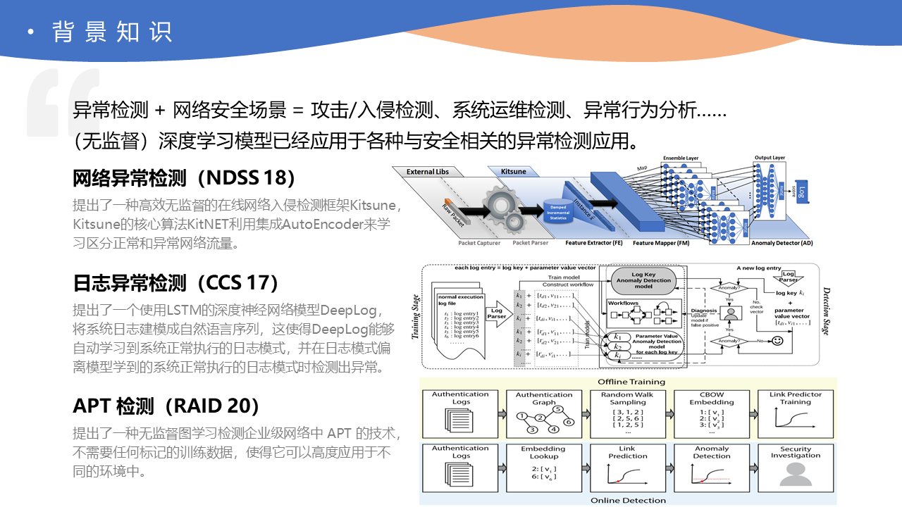
尽管无监督深度学习模型已经展示了巨大的前景和卓越的性能，但深度学习模型的决策缺乏透明度和可解释性，这点成为了实际中采用深度学习模型的主要障碍，尤其是在与安全相关的领域。
最终导致的结果就是，安全运营商对过度简化的模型反馈感到困惑，犹豫是否相信模型决策，对模型错误感到畏缩，且很可能被大量无意义的误报所淹没，而不知该如何调整改进实际环境下部署的异常检测模型。
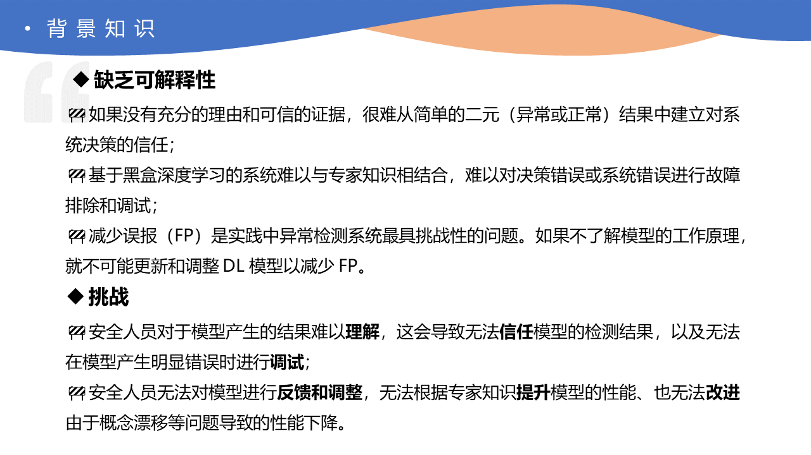
总体框架
本研究以解决上述两方面挑战为目标，提出了一套适用于网络安全场景下异常检测模型的 DeepAID 框架，作者在文章中广泛调查了应用深度学习算法进行异常检测的安全应用场景，其中，安全应用程序通常从非结构化的原始数据开始，例如网络流量和系统日志，这些数据不能直接输入到神经网络中，需要基于特定领域知识的预处理和特征工程。
因此，作者将经过预处理的原始数据定义为三类：表格数据、时序数据和图结构数据。并且，分别使用自动编码器、循环神经网络 RNN/LSTM 和图神经网络进行异常检测。
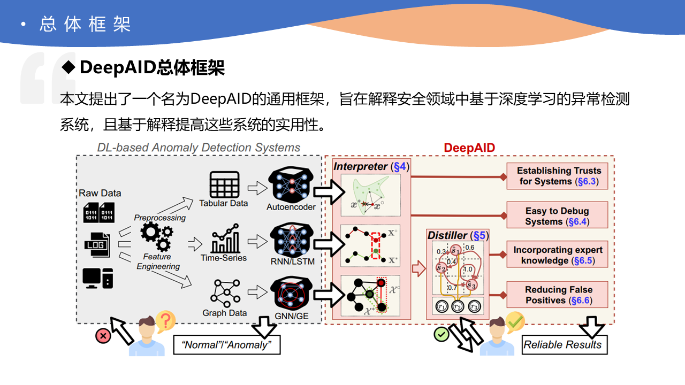
研究动机
事实上，深度学习模型的可解释性在学术界已经被广泛研究，为什么不使用现有解释方法呢？作者认为已有的解释方法并不适用于网络安全场景的异常检测系统中，主要有两个原因。
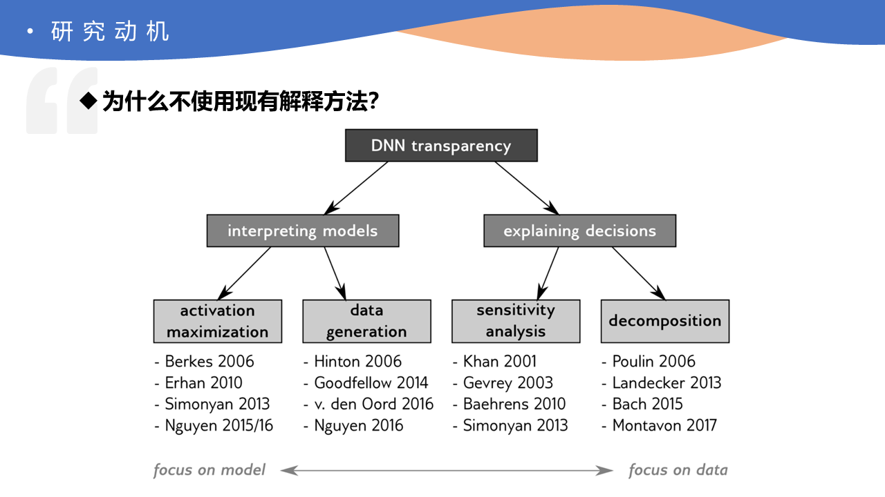
首先，目前绝大多数解释方法都应用于监督学习模型（如分类任务）中，然而监督学习和异常检测过程不同：监督学习模型需要多类数据标签进行训练，检测阶段判断和当前样本最接近的类别；而异常检测模型只使用正常数据进行训练，在检测阶段将偏离正常模式的样本判定为异常。因此，两类方法的解释过程也有所不同，不能简单的将监督学习的解释方法迁移到对异常检测模型的解释中。
如图所示，左侧是常见一类基于近似的监督学习解释方法，其主要思路是利用待解释点附近的两类数据对复杂模型进行局部近似，训练可解释的模型对待解释点进行解释。然而，对于异常检测而言，我们没有异常的训练数据和异常标签。
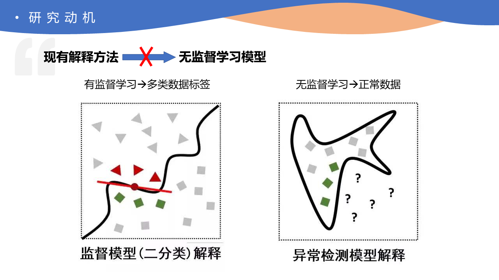
此外，和应用深度学习的人工智能领域不同，安全人员主要关心决策依据、反馈分析和系统提升，解释侧重不同。
以图像分类为例（左侧），在解释猫的图片时，不同的解释器，或者同一解释多次解释，可能会产生多种解释（左下侧），对于人而言，这些解释都是合理的。但是对于安全领域来说（右侧），要分析的数据通常是经过专家知识提取的高维度向量，类似的解释（右下侧）对于安全人员而言则效果较差，一方面，解释结果中包含了太多维度，导致解释可读性差；另一方面，多次解释同一样本结果是不一致的，这也会令安全人员比较困惑，到底哪一部分才是更重要的特征。
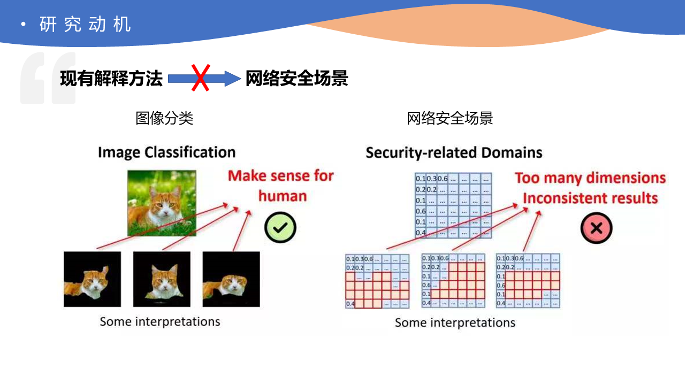
综上所述，需要提出适用于安全领域的且不依赖于异常数据知识的深度学习解释方法。
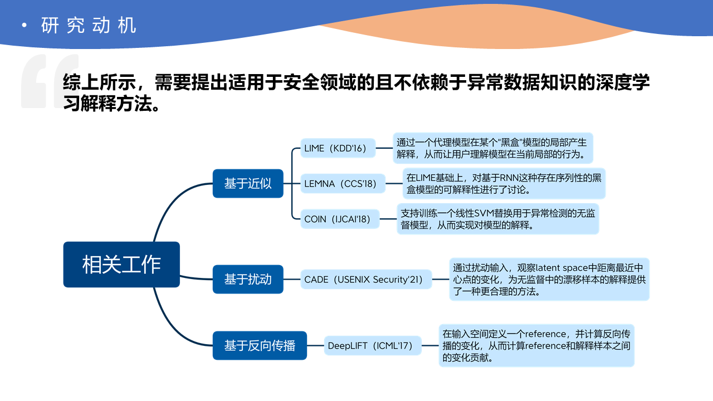
二、算法设计
如图所示，DeepAID 位于框架图的右侧部分，主要由解释模块 Interpreter 和蒸馏器 Distiller 组成。
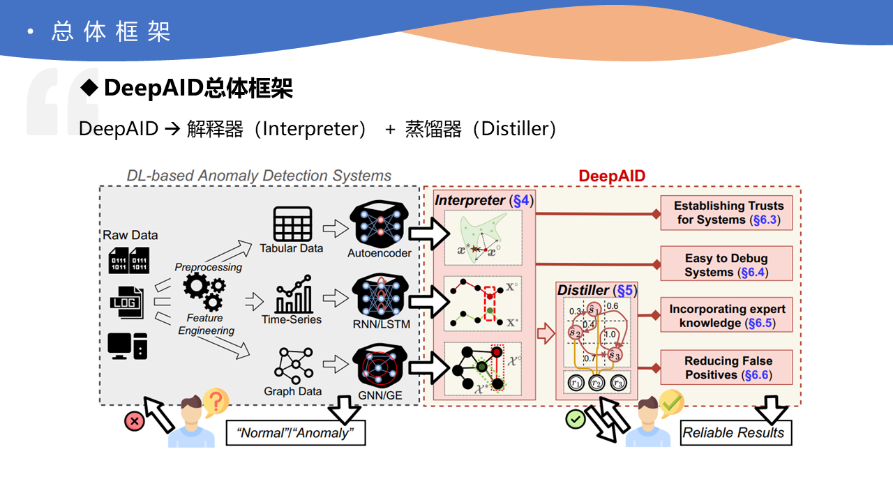
模型解释 - 概述
解释模块针对三种不同类型的安全应用场景分别设计，首先从 high-level 的视角看整个解释模块。
回顾一下监督模型和异常检测的差别。以猫 - 狗图像分类为例，对于监督学习而言，因为训练过程中同时学习了猫和狗的模式，因此解释一张狗的图片实际上是在寻找当前样本和模型中学习到的狗的数据的 “相似性”；相比之下，在异常检测中，因为模型训练阶段没有任何关于异常的信息，所以异常检测的解释过程本质上是在解释异常样本和模型中正常模式的 “差异性”。
因此，核心思路是基于差异的解释，即通过首先寻找正常分布中的 “参考点”，然后通过对比参考点和异常点之间的差异来解释样本判定为异常的原因。那么该解释方法的核心就转变成了如何寻找一个最合适的参考点。
一种最简单的方法是直接从异常检测的训练集（都是正常数据）中寻找参考点，但这种方法存在着明显问题，比如直接选用训练数据会导致其和异常点之间的差异过大，以及不同的训练集和训练数据会导致解释结果的不稳定。因此，本研究采用的方法是生成一些能够满足安全场景约束的参考点，主要提出了五个约束，把寻找参考点的过程转化为在满足一系列约束条件下的优化问题进行求解。
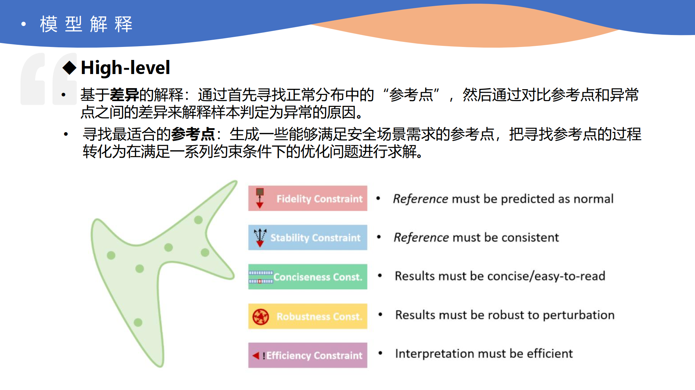
看一下优化问题的形式化表述，异常点已知，目的是要寻找到参考点，找到之后就可以根据异常点和参考点之间的差异进行解释。
下图中的思维导图为五个约束的具体含义，其中高效性约束体现在实现过程中，鲁棒性约束体现在参考点初始化过程中。而搜索优化的过程主要取决于左侧的三个约束，相对应于形式化表述中的三个 Loss 值。
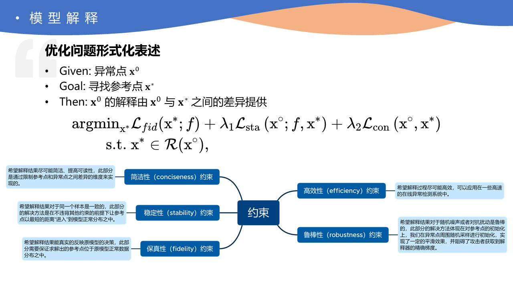
模型解释 - 表格数据
下面详细对不同类型的特征具体解释这个搜索优化过程，首先是表格数据。
表格异常数据 𝒙◦ 的保真性约束可以通过添加一个约束条件来转化，以确保搜索到的参考点被模型判断为正常。
为了定义稳定性约束，我们确保参考点 𝒙∗ 尽可能地接近异常点 𝒙◦，引入欧氏距离来衡量。
为了定义简洁性约束，我们利用 L0 norm 来衡量 𝒙∗ 和 𝒙◦ 之间的差异。
但由于下图中列出的三方面挑战，上述公式很难直接求解，论文用了一些 trick 进行解决。
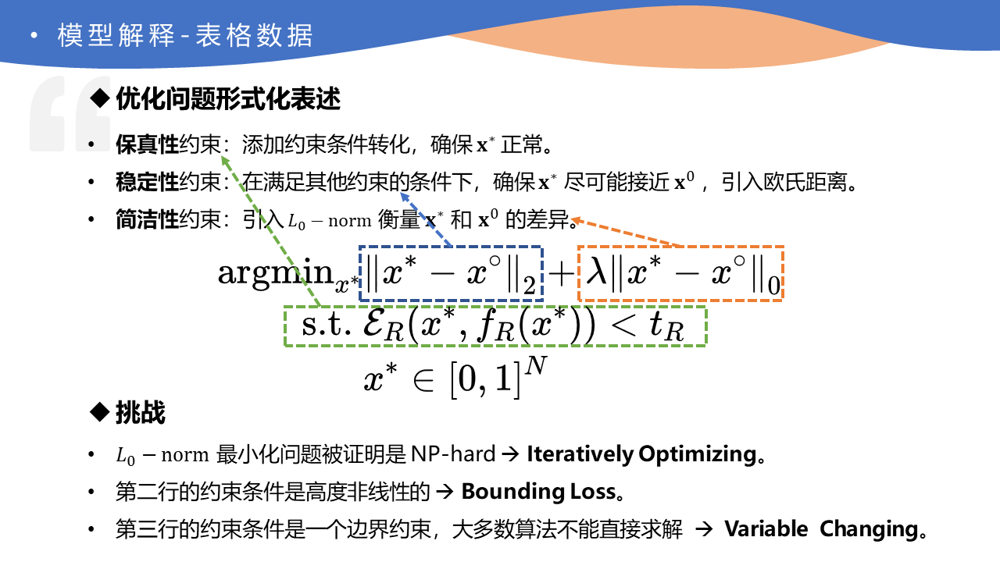
这里忽略细节，通过上述 trick，优化问题在每次迭代中都被转换为以下无约束的问题。
为了说明求解过程，我们将目标函数缩写为 $ \mathcal {D}{t a b}\left(x^{*} ; \varepsilon{R} ; f_{R} ; t_{R} ; \epsilon ; \lambda ; x^{\circ}\right) $，或更简明地写为 $ \mathcal {D}_{t a b}\left (x^{*} ; x^{\circ}\right) $。
这个问题可以通过基于梯度的优化方法来解决，在本研究中使用了 Adam 优化器。
𝒙∗ 的一个简单的初始化方法是直接从异常点 𝒙◦ 搜索，为了提高鲁棒性，我们从异常点 𝒙◦ 的附近初始化 𝒙∗，然后在循环过程中，在之前提到的约束下不断优化，从而求出参考点。
其中对算法进行了一些优化，提高了效率，满足高效性的约束。
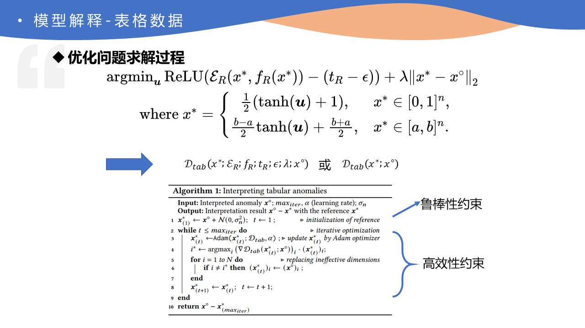
这里先把实验部分拿过来，看看 DeepAID 到底是如何让安全人员理解模型决策、建立对模型的信任的。
我们使用网络入侵检测器 Kitsune 的案例来说明，假设 Kitsune 模型已经训练好了，可以检测出 ARP 扫描这一种类型的异常。使用解释器对模型进行解释，下图第一个表格展示了 100 维特征中 5 个最重要的特征维度及其含义，以及各维度下参考点和异常点的取值比较。
第一维特征中可看出在短期和长期从单个主机发出的数据包数量高于参考值，第三维特征中可看出发送的数据包标准差异常值小于参考值，说明异常流量中都是相似长度的数据包，第五维特征中可看出发送到不同的目的主机，因此安全人员可以理解当前的异常是一种主机扫描的行为，通过查看原始流量进行验证后，就建立了对模型决策的信任。
另外还可以对系统错误进行调试，下图第二个表提供了对 Kitsune 网络入侵检测器某个异常值误报过高的解释结果。从解释结果中可以看出，和协方差（cov.）以及相关系数（pcc.）有关的特征的异常值和参考值相差的非常大，通过对原始流量进行验证，我们发现了原系统中关于 cov. 和 pcc. 的特征提取存在一定问题，因此我们重新实现了特征提取器并重新对当前数据集进行异常检测，在几乎没有影响正确告警的情况下降低了 95% 左右的误报。
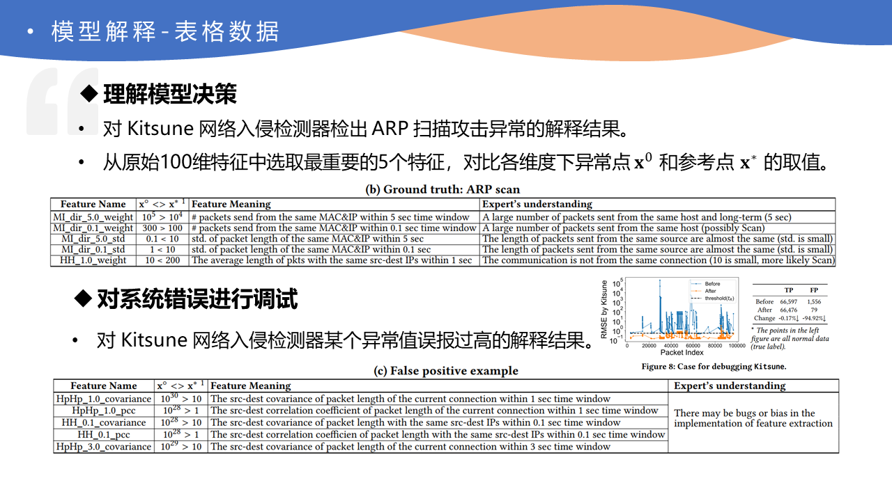
模型解释 - 时序数据
其余两种数据结构的解释不详细介绍了，核心思想大同小异，可以去论文中查看细节。
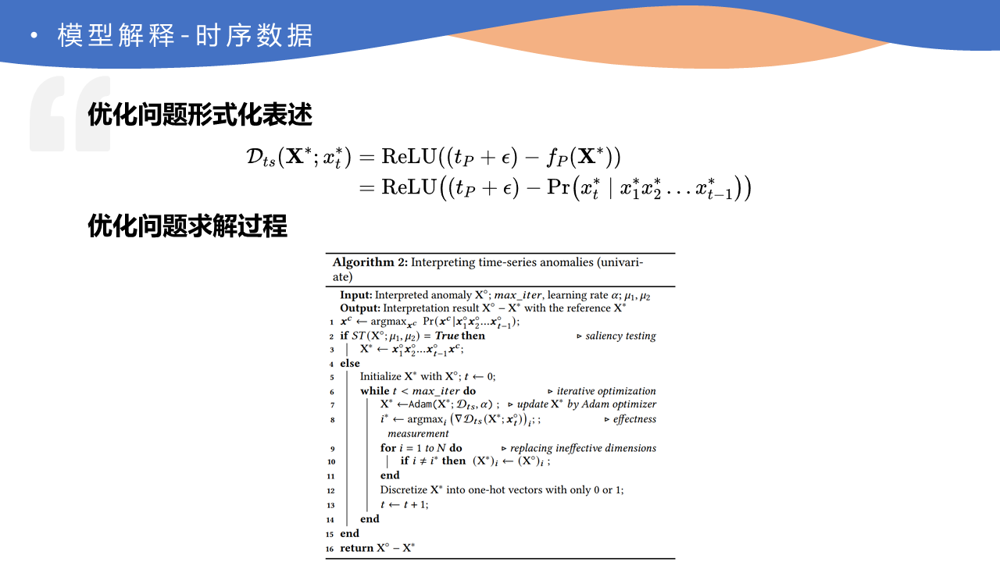
模型解释 - 图结构数据
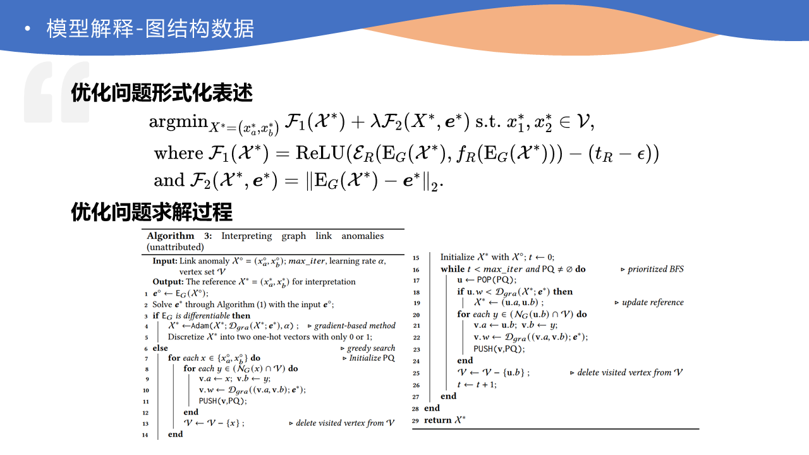
下面跳出具体细节重新来看，解释模块针对三种不同类型的安全应用场景分别设计，通过基于具有安全相关约束的优化问题来对模型进行高质量的解释。具体来说，解释模块通过搜索优化找到最合适的参照对象，该对象被模型视为正常数据，然后，通过研究该异常与其参照对象之间的差异，推导出对该异常的解释。
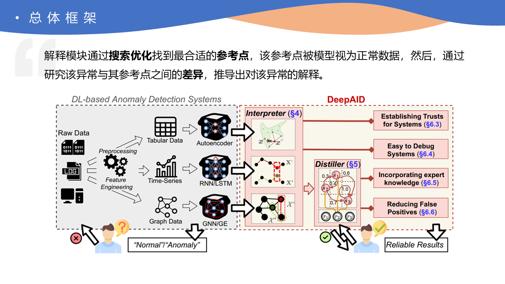
模型反馈
通过解释器，安全人员已经可以理解模型的结果，但由于模型决策本身还是不透明的，安全人员依然难以和模型进行交互。为了帮助安全人员对模型进行反馈，本文提出了蒸馏器（Distiller）模型。
蒸馏器支持专家或安全人员对解释结果提供任何反馈，如图，在添加了基于专家知识的规则后，Distiller 能够自动识别未来的类似异常情况，从而输出更可靠的结果。
简而言之，蒸馏器包含了两个有限自动机（FSM）模型，其中第一个自动机用于存储某个异常的解释结果，第二个自动机用于存储专家对特定解释结果的反馈信息。
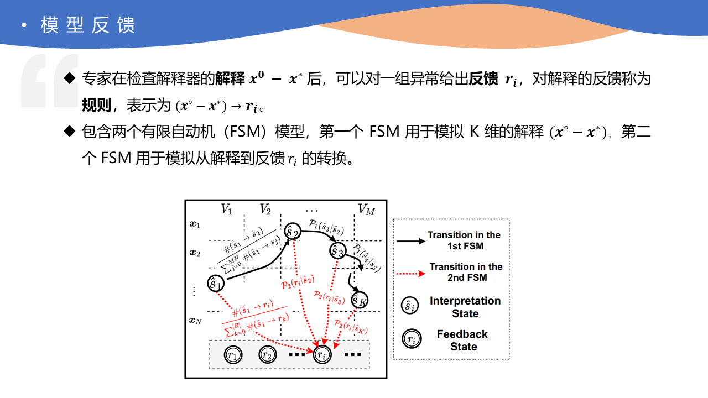
蒸馏器包含两种工作模型，在更新（update）阶段，专家对于某些异常提供新的反馈，将新的专家知识存储到蒸馏器中，在预测（test）阶段，其作为原模型后端的插件提供相似异常的反馈结果。
下图展示了蒸馏器工作流程的简单例子，其中包含从一个没有任何信息的蒸馏器开始两次更新异常反馈结果并预测的过程。
- 在②中假设专家查看异常的解释后希望将此标注为扫描攻击，则此解释结果（可以看作一个由参考点和异常点差异组成的序列）将会映射到第一个自动机中并更新转移概率矩阵，然后在第二个自动机中添加一个表示扫描攻击的状态，并将刚才解释状态转移到该状态中并更新转移概率矩阵。
- 在③中可以看出蒸馏器已经具备对该异常和相似异常的反馈能力。
- ④和⑤中同理更新了一条专家反馈，其中预测阶段的结果中也可以很好的区分两个不同的反馈。
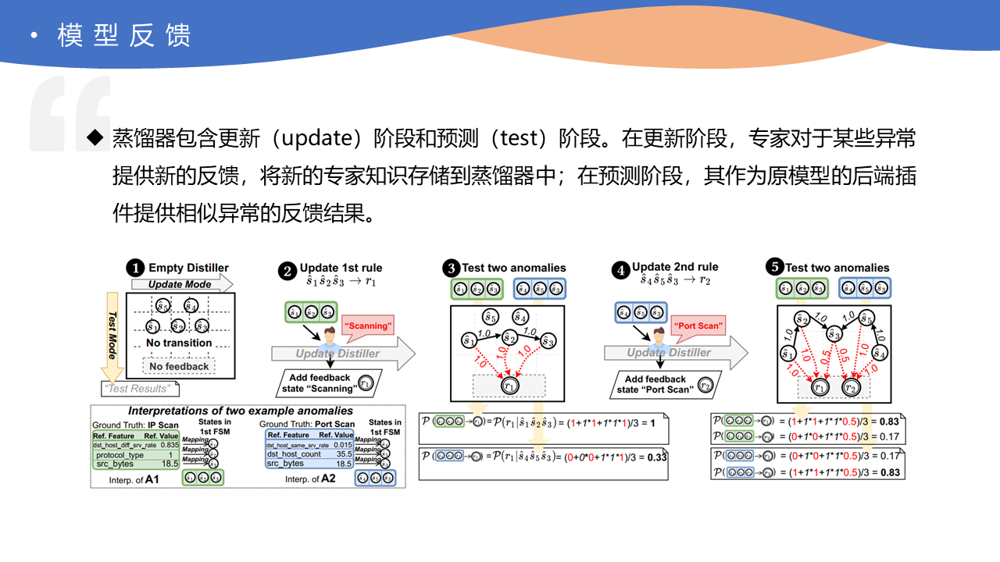
三、实验设计与结果
实验准备
选取待解释的异常检测系统为 Kitsune、DeepLog 和 GLGV，分别对应于表格数据、时序数据和图结构数据。
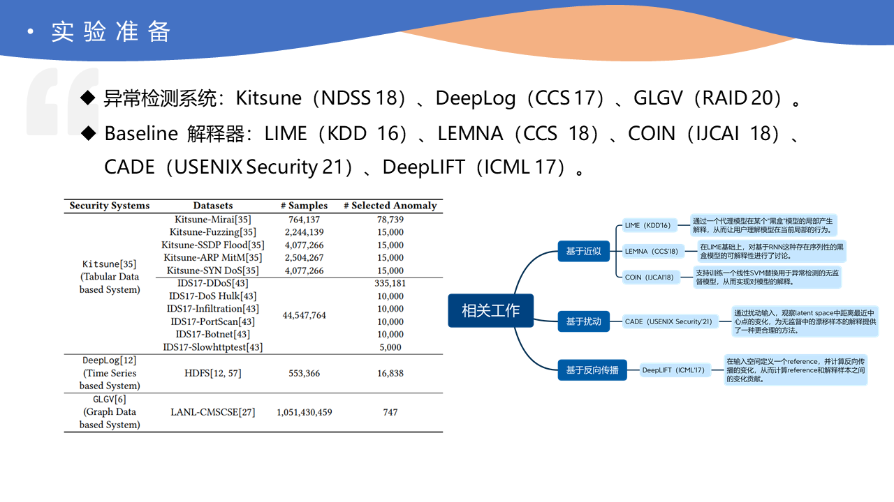
解释性能
下图展示了解释器在不同约束下的的解释性能。
- 保真性约束。定义一个指标标签翻转率（Label Flipping Rate，LFR），即异常数据被解释结果代替后恢复正常的比率。很明显，引入越多维度，LFR 会越高，但这破坏了简洁性。在 4 (a) 中评估了表格数据和时序数据下保真性和简洁性的权衡。其中，S.R.T.D 从现有分布中采样选择参考点，效果很差。这表明在 DeepAID 中搜索参考的必要性。结果还表明，有监督的解释器由于其低保真度而不适合无监督学习。
- 稳定性约束。解释器的稳定性是指在多次运行过程中对相同样本的解释的相似性。我们利用 Jaccard 相似性（JS）来衡量两个结果的相似性。反复测量每个异常点的多个解释结果，计算平均值。我们可以观察到，基于近似 / 扰动的方法由于其随机采样 / 扰动而表现不佳，而基于反向传播的方法（DeepAID 和 DeepLIFT）具有很强的稳定性。
- 鲁棒性约束。初始化加了高斯噪声后，S.R.T.D. 在选择参考点时对噪声表现出高度的敏感性，与其他 baseline 相比，COIN 和 DeepLIFT 相对稳健，但仍低于 DeepAID。初始化进行扰动攻击后，5 (a)(b)(c) 证明 I.R.N 可以在不损失原有稳定性的情况下减轻攻击效果。
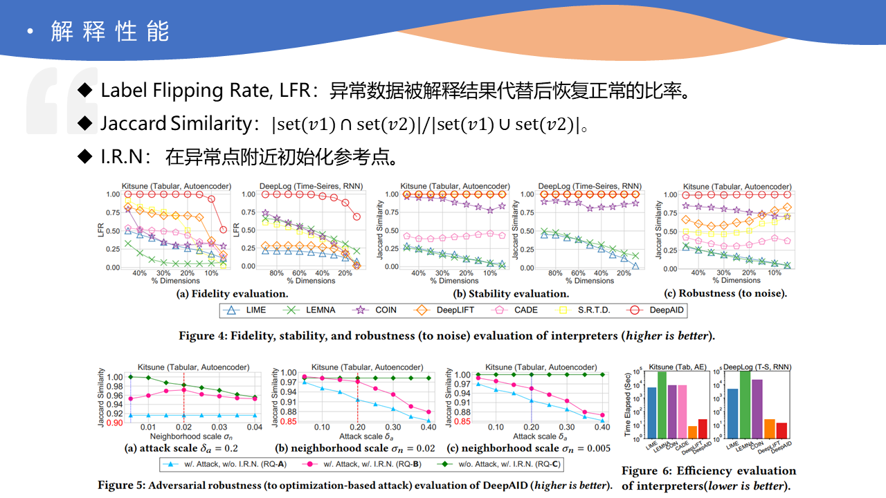
总结上述实验结果，只有 DeepAID 能有效地满足安全领域的所有特殊要求，并为基于深度学习的无监督异常检测产生高质量的解释。
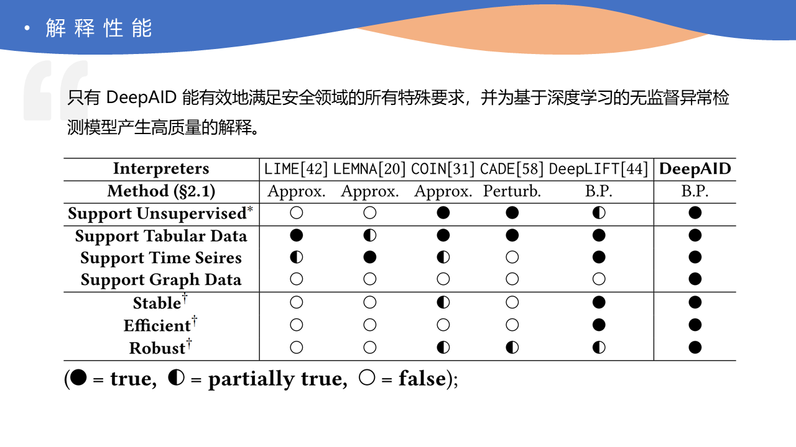
蒸馏器反馈准确性
此部分实验将蒸馏器和机器学习多分类器（随机森林和多层感知机）进行对比。机器学习模型和蒸馏器都使用带标注的训练集和测试集，训练集在蒸馏器中可以理解为更新阶段的异常，标签可以理解为专家反馈。
结果如下图所示，前两列测评了对训练集中异常的匹配准确度，可以看出随机森林和蒸馏器都可以很好的匹配，中间两列测评了不同方法在测试集上的泛化能力，可以看出蒸馏器的泛化效果（对于类似异常的反馈能力）远好于机器学习模型，最后一列是对于未知异常检测的能力，机器学习模型中类别在训练前已经确定，无法检测未知异常，而蒸馏器可以很好的保留模型对于未知异常的检测能力。
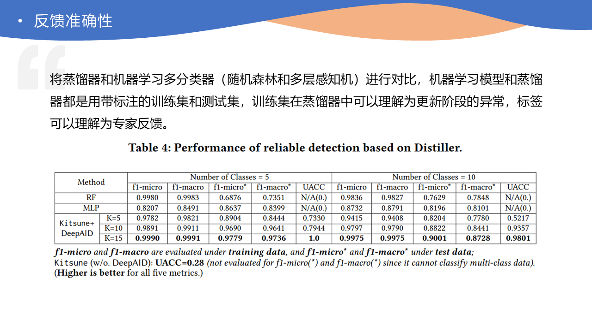
四、论文总结
本文提出了首个适用于网络安全异常检测应用的深度学习解释方法，可以为多种不同源数据和模型的异常检测系统提供高保真、可读性强、稳定、鲁棒且高效的解释结果。
同时，本文展示了基于解释结果来提升异常检测系统的多种应用案例，包含对模型决策的理解和信任、错误调试，并提出了蒸馏器模型实现专家知识和模型的融合。
本文为三类不同异常检测系统提供了解释方法的原型实现，旨在促进深度学习方法在实际网络安全场景下的应用，解释工具已经开源在 Github。
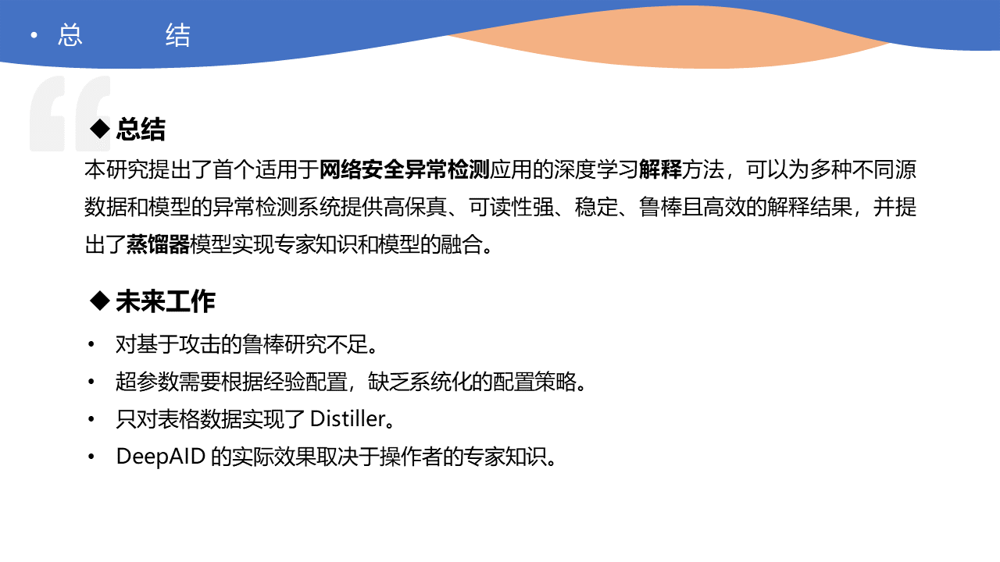
- 版权声明：本文采用知识共享 3.0 许可证 (保持署名-自由转载-非商用-非衍生)
- 发表于 2022-04-30